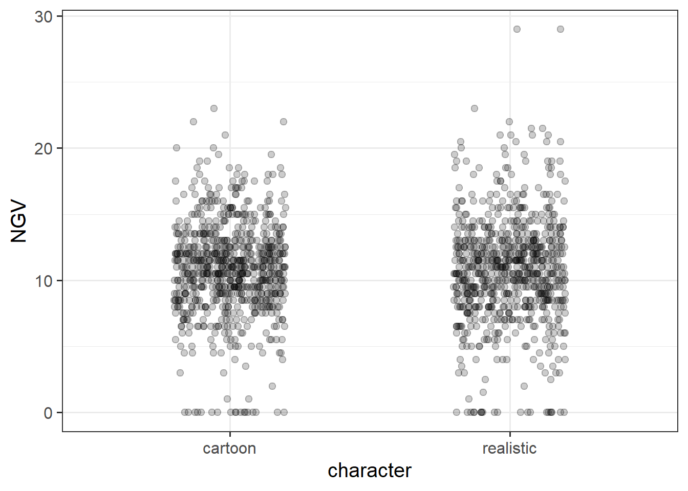
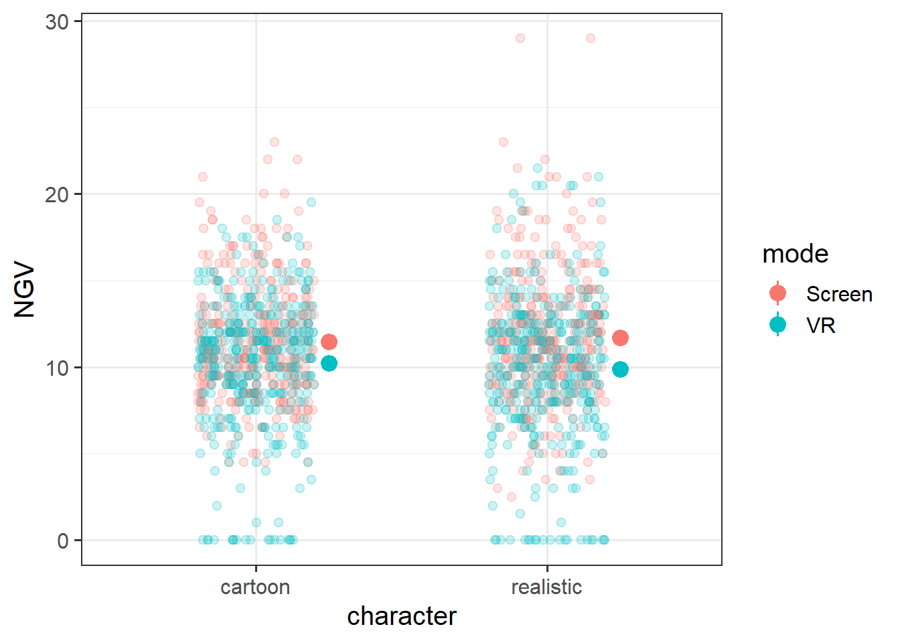
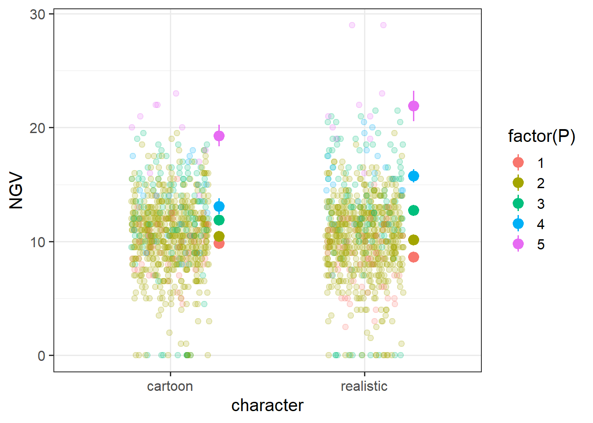
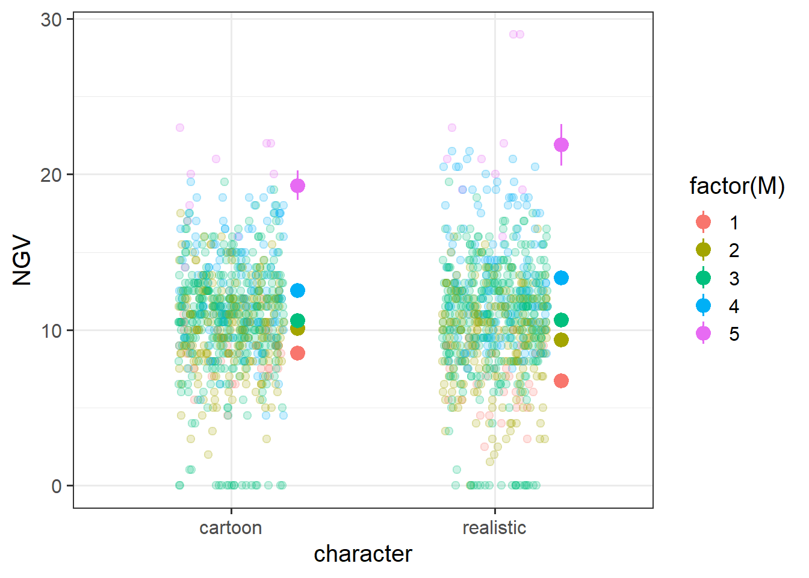
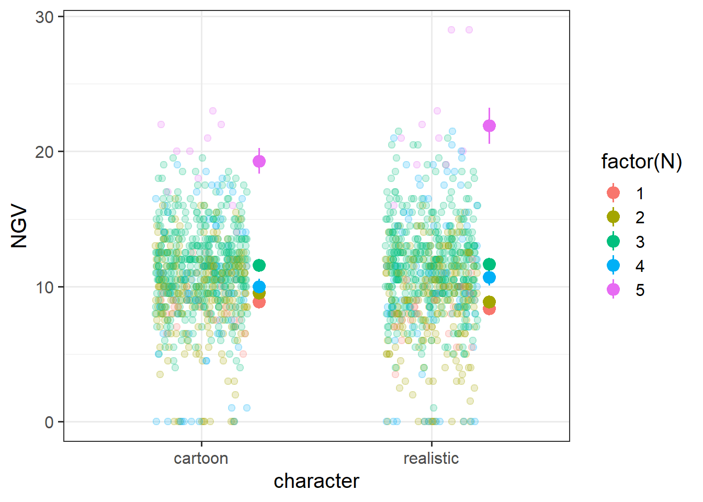

Week 5 Exercises: Assumptions, Diagnostics, Writing up
Video game aggression and the dark triad
Dataset: NGV.csv
These data are from an experiment designed to investigate how the realism of video games is associated with more/less unnecessarily aggressive gameplay, and whether this differs depending upon a) the playing mode (playing on a screen vs VR headset), and b) individual differences in the ‘dark triad’ personality traits.
The experiment involved playing 10 levels of a game in which the objective was to escape a maze. Various obstacles and other characters were present throughout the maze, and players could interact with these by side-stepping or jumping over them, or by pushing or shooting at them. All of these actions took the same amount of effort to complete (pressing a button), and each one achieved the same end (moving beyond the obstacle and being able to continue through the maze).
Each participant completed all 10 levels twice, once in which all characters were presented as cartoons, and once in which all characters were presented as realistic humans and animals. The layout of the level was identical in both, the only difference being the depiction of objects and characters. For each participant, these 20 levels (\(2 \times 10\) mazes) were presented in a random order. Half of the participants played via a screen, and the other half played via a VR headset. For each level played, we have a record of “needless game violence” (NGV) which was calculated via the number of aggressive (pushing/shooting) actions taken (+0.5 for every action that missed an object, +1 for every action aimed at an inanimate object, and +2 for every action aimed at an animate character).
Prior to the experiment, each participant completed the Short Dark Triad 3 (SD-3), which measures the three traits of machiavellianism, narcissism, and psychopathy.
Whether the objects and characters in the level were presented as 'cartoon' or as 'realistic'
mode
Whether the participant played via a screen or with a VR headset
P
Psycopathy Trait from SD-3 (score 1-5)
N
Narcissism Trait from SD-3 (score 1-5)
M
Machiavellianism Trait from SD-3 (score 1-5)
NGV
Needless Game Violence metric
Question 1
Conduct an analysis to address the research aims!
Hints
There’s a lot to unpack in the research aim: “how the realism of video games is associated with more/less unnecessarily aggressive gameplay, and whether this differs depending upon a) the playing mode (playing on a screen vs VR headset), and b) individual differences in the ‘dark triad’ personality traits.”
PID age level character mode
ppt_1 : 20 Min. :18.00 level1 :152 cartoon :760 Screen:740
ppt_10 : 20 1st Qu.:28.00 level10:152 realistic:760 VR :780
ppt_11 : 20 Median :36.50 level2 :152
ppt_12 : 20 Mean :34.99 level3 :152
ppt_13 : 20 3rd Qu.:42.25 level4 :152
ppt_14 : 20 Max. :48.00 level5 :152
(Other):1400 (Other):608
P N M NGV
Min. :1.000 Min. :1.000 Min. :1.000 Min. : 0.000
1st Qu.:2.000 1st Qu.:2.000 1st Qu.:2.000 1st Qu.: 8.875
Median :2.000 Median :3.000 Median :3.000 Median :11.000
Mean :2.171 Mean :2.763 Mean :2.842 Mean :10.788
3rd Qu.:2.000 3rd Qu.:3.000 3rd Qu.:3.000 3rd Qu.:13.000
Max. :5.000 Max. :5.000 Max. :5.000 Max. :29.000
everything looks good to me! All ranges looks fine.
How many people do we have?
dim(table(ngv$PID, ngv$character))
[1] 76 2
76!
Does everyone have 10 datapoints for cartoon and 10 for realistic?
any(table(ngv$PID, ngv$character)!=10)
[1] FALSE
yes, they do!
Solution 2. Okay. Let’s plot.. The question asks about “how the realism of video games is associated with more/less unnecessarily aggressive gameplay”.
So we’ll put the character on the x-axis and our outcome NGV on the y:
I like jitters, but you could put boxplots or violin plots too!
ggplot(ngv, aes(x = character, y = NGV)) +geom_jitter(height=0, width=.2, alpha=.2)

We’re also interested in whether this differs depending on the mode of gameplay (screen vs VR headset). So we could facet_wrap perhaps? or colour?
Let’s also plot the means - i’ll put those to the side of all the jittered points with a “nudge”..
ggplot(ngv, aes(x = character, y = NGV, col = mode)) +geom_jitter(height=0, width=.2, alpha=.2) +stat_summary(geom="pointrange", position =position_nudge(x=.25))

As well as looking at whether the NGV~character relationship differs between modes, we’re also interested in the differences in this relationship due to individual differences in the dark triad personality traits. We have these measured for each person, so we can just use a similar idea:
ggplot(ngv, aes(x = character, y = NGV, col =factor(P))) +geom_jitter(height=0, width=.2, alpha=.2) +stat_summary(geom="pointrange", position =position_nudge(x=.25))

ggplot(ngv, aes(x = character, y = NGV, col =factor(M))) +geom_jitter(height=0, width=.2, alpha=.2) +stat_summary(geom="pointrange", position =position_nudge(x=.25))

ggplot(ngv, aes(x = character, y = NGV, col =factor(N))) +geom_jitter(height=0, width=.2, alpha=.2) +stat_summary(geom="pointrange", position =position_nudge(x=.25))

What do we get from all these plots? Well, it looks like mode might be changing the relationship between character and violence. It also looks like there’s a considerable effect of the dark triad on the amount of violence people use! Of course, in these individual plots, it’s hard to ascertain the extent to which plots showing differences between levels of Narcissism are due to Narcissism or due to differences in Psychopathy (all the dark triad traits are fairly correlated)
ngv |>select(P,N,M) |>cor() |>round(2)
P N M
P 1.00 0.43 0.51
N 0.43 1.00 0.58
M 0.51 0.58 1.00
So we need to do some modelling!
Solution 3. NOTE: This is how I might approach this question. There are lots of other things that we could quite sensibly do!
We know that we’re interested in NGV ~ character.
We also have the additional question of whether this is different between modes - NGV ~ character * mode.
And whether the NGV ~ character association is modulated by Psychopathy NGV ~ character * P, and by Narcissism NGV ~ character * N, and by Machiavellianism NGV ~ character * M.
We could fit these all in one: NGV ~ character * (mode + P + M + N)
We have multiple observations per participant PID, and we also have multiple observations for each level level. All participants see every level, and every level is seen by all participants. It’s not the case that a level is unique to a single participant, so these are crossed. ( ?? | PID) + ( ?? | level)
Participants plays both the cartoon and the realistic versions, so we could have variation between participants in how realism affects violence - (1 + character | PID). Beyond this, all variables are measured at the participant level, so we can’t have anything else.
For the levels, each level is played by some participants in VR headsets and some participants on a screen, so we could have some levels for which VR feels very different (and makes you play more violently?) - (mode | level). We could also have some levels for which the realism has a bigger effect - (character | level), and also have some levels for which people high on the dark triad play differently - i.e. the dark triad could result in lots of violence in level 2, but not in level 3 - (P + M + N | level).
(you could also try to fit the interactions in the random effects here but i’m not going to even try!)
m0 =lmer(NGV ~ character * (mode + P + M + N) + (1+ character | PID) + (1+ character + mode + P + M + N | level), data = ngv)
after some simplification, I end up at the model below. You might end up at a slightly different random effect structure, and that is completely okay! The important thing is to be transparent in your decisions.
m1 =lmer(NGV ~ character * (mode + P + M + N) + (1+ character | PID) + (1+ mode | level), data = ngv)
There’s something weird going on in the left hand side with a bunch of points looking funny! My guess is that this may well come out when examining influence.
In the QQplots of the random effects below we can see a couple of participants are a bit off - this may well be what we are seeing above.
The QQplots for the level random effects are hard to evaluate in part because there aren’t many levels (only 10). Let’s do some histograms too. They don’t look terrible..
m1a <-lmer(NGV ~ character * (mode + P + M + N) + (1+ character | PID) + (1+ mode | level), data = ngv |>filter(!(PID %in%c("ppt_59","ppt_53"))))
Our conclusions change!
The significance of P (which is the association between psychopathy and needless violence in the cartoon condition) depends upon exclusion of these two participants. I’m showing the table with Satterthwaite p-values as it’s a bit quicker, but given that we have only 10 groups for the level random effect, it might be worth switching to KR
The link below will take you to a page with all the datasets that we have seen across the readings and exercises, as well as a few extra ones that should be new! For each one, there is a quick explanation of the study design which also details the research aims of the project.